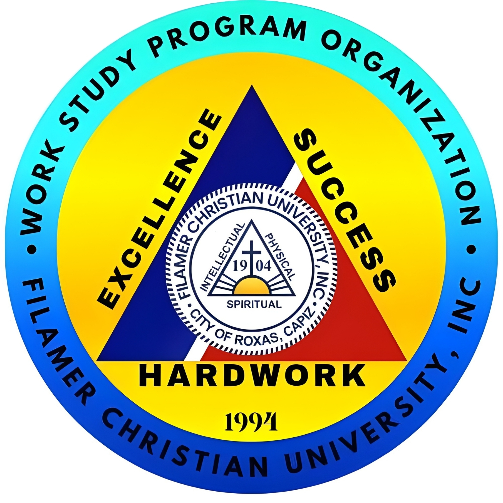

TechHRM
A Work Study Program Organization Information System for Filamer Christian University, Inc.
Researchers
Miguel Angelo Basinillo
Yvan Dale Lastimoso
Mc Jersy dela Cruz
Ian Miguel Dumangon
Section · Adviser · Date
BSIT 4A · Mrs. Jonah P. Gafate
September 2026
01 · Project Background
WSPO still runs a 32-year program on paper.
WSPO (formerly Grassroots, 1994) places working students in FCU offices. For 1st Sem A.Y. 2026–2027 it serves 201 working students using logbooks, spreadsheets, and physical files.
Applications get delayed or misplaced. Attendance is hard to verify. Placement and penalties are inconsistent. Reports take too long to prepare.
| Process | Existing (manual) | Proposed (TechHRM) |
|---|---|---|
| Application | Paper, spreadsheets, physical files | Centralized digital records and documents |
| Placement | Manual deployment and monitoring | Digital assignment to departments |
| Attendance | Manual logs; hard to consolidate | Electronic hours in one database |
| Reports | Manual consolidation | Automated analytics for decisions |
02 · Statement of the Problem
Five operational problems
- Delays in work-study application processing due to manual submission and evaluation.
- Inefficient work-study placement and monitoring of working students across offices.
- Inaccurate attendance, scheduling, and financial records from manual processes.
- Inconsistent monitoring of penalties and policy compliance across assignments.
- Time-consuming report generation that delays administrative decision-making.
03 · Objectives of the Study
What this study will accomplish
Design and develop TechHRM, a centralized, secure, web-based information system that automates and improves management of FCU’s Work-Study Program.
Centralize student information and application documents to speed evaluation and approval.
Assign qualified working students to departments based on office needs and available slots.
Record attendance, monitor rendered hours, and coordinate work schedules.
Organize work-hour, deduction, and disciplinary records for consistent administration.
Generate summaries and insights so WSPO can monitor operations and decide with current data.
04 · Proposed Solution
One system for the full work-study lifecycle
TechHRM replaces fragmented paper processes with role-based access to applications, placement, attendance, schedules, finances, discipline, and reports.
Apply, track status, view schedule, record attendance, see hours, and appeal records.
Request working students, manage duties, monitor attendance, and file incidents.
Process applications, assign placements, view and print DTR, and generate reports.
05 · Scope and Delimitations
What TechHRM covers — and what it does not
WSPO of FCU only. Applications, placement, attendance, schedules, work-study financial information, disciplinary records, RBAC, and automated reports. Access on PCs and phones through the responsive website over local Wi-Fi.
Other universities. General academic records. Full institutional payroll. Offline-only operation. Public internet/cloud hosting and a native mobile app are not required for midterm use. Advanced integrations with other FCU systems (future work).
Currently hosted on the local XAMPP server and reached over campus/local Wi-Fi. Phones use the same responsive website in a browser. Cloud hosting is planned after midterm.
06 · Target Users
Four roles, one workflow
Applies, views placement, clocks in/out, views schedule and tasks, tracks hours, and appeals disciplinary records.
Requests working students (quantity, duty, gender), manages schedules and tasks, monitors attendance, and files incidents for their office.
Reviews applications, chooses who is sent to an office, views and prints DTR, and manages compliance, hours, users, and reports.
Oversees user accounts, roles, audit trail, documents, and university-wide operations.
07 · System Features / Modules
Six core modules
Public application, documents, profiles, pipeline, and user accounts.
Staffing requests, gender slots, coordinator assignment, office placement.
Secure clock-in/out, hours summary, and view/print DTR for working students and for WSPO staff/coordinator.
Duty schedules, edit requests, task assignment, and duty types.
Work-hour assessment, deductions, and compensation visibility.
Analytics dashboards, audit trail, and exportable operational summaries.
Supporting features: notifications, disciplinary/compliance board, requirement review, and role-based menus.
08 · Architecture / Technology Stack
Web application over a centralized database
React, TypeScript, Vite, Tailwind CSS, Axios, Recharts
Laravel, Sanctum, Eloquent, secure file serving
Local XAMPP on campus/Wi-Fi. Same site opens on a phone browser. Cloud (Railway/Vercel) planned after midterm.
09 · System Design
Use Case Diagram
10 · Current Development Status
Meaningful functional progress
| Feature | Status | Evidence |
|---|---|---|
| Application, documents, pipeline | Completed | Public apply → WSPO review → account |
| Placement / staffing requests | Completed | Qty, duty, gender; coordinator assigns |
| Attendance, DTR, hours | Completed | Token clock-in; WSPO can view and print DTR |
| Schedules, tasks, compliance | Completed | Edit requests, tasks, appeals |
| Financial assessment & analytics | Completed | Work-hour module + dashboards |
| Users, RBAC, notifications, logs | Completed | Four roles live in the web app |
| Phone access (responsive web) | Completed | Same site in a phone browser over local Wi-Fi |
| Formal UAT / Likert evaluation | Partial | Internal functional tests; UAT planned |
| Cloud deploy (Railway / Vercel) | In progress | Local XAMPP for midterm; cloud next |
11 · System Demonstration
Main process, start to finish
- ApplyPublic WSPO application with documents.
- ReviewCoordinator processes the application in the pipeline.
- RequestSupervisor requests working students: quantity, duty, gender.
- AssignCoordinator selects working students and confirms placement. Both sides are notified.
- WorkWorking student clocks in with the daily token and views schedule/tasks.
- RecordHours appear on DTR. WSPO staff/coordinator can view and print the official form.
- ReportWSPO views analytics and audit trail.
superadmin · wspostaff · supervisor · student12 · Initial Testing / Evaluation
What we have tested so far
Role-based functional checks on apply, place, clock-in, staffing gender rules, notifications, appeals, DTR print, and restricted menus per role.
Formal UAT with working students, supervisors, and WSPO staff. Likert questionnaire on functionality, usability, reliability, efficiency, and security. Weighted mean analysis before final defense.
Working modules in the live system. Issues found during internal runs were fixed in later Agile iterations (placement ownership, gender slots, secure files, official DTR format).
13 · Challenges and Actions Taken
Problems we hit — and how we responded
First design let supervisors pick names. WSPO required coordinator assignment. We split request vs. assignment and added notifications.
Offices need specific male/female counts. Requests now carry gender per quantity, and assignment is validated against that.
Paper logs can be filled for someone else. We issued a supervisor daily token for clock-in instead of an open log.
Internal tables did not match WSPO’s form. We rebuilt print view to the institutional 31-day AM/PM layout.
14 · Conclusion / Next Steps
Ready for midterm; finishing toward final defense
A working web system covering the six WSPO modules, four user roles, and the main employment lifecycle from application through reporting.
Formal UAT and questionnaire analysis. Cloud deployment so the site is reachable beyond local Wi-Fi. Training materials for WSPO users.
Thank you. Questions are welcome.